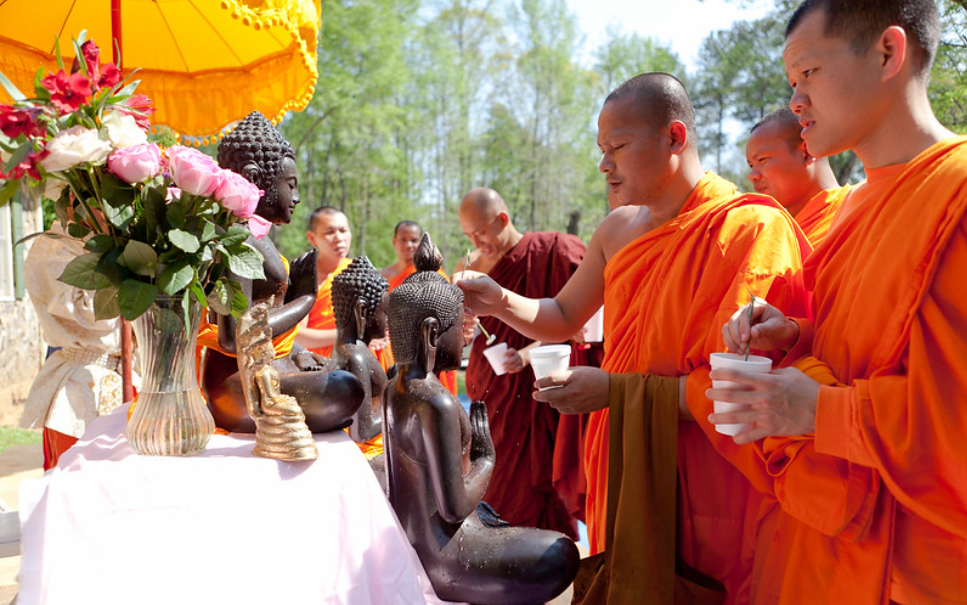
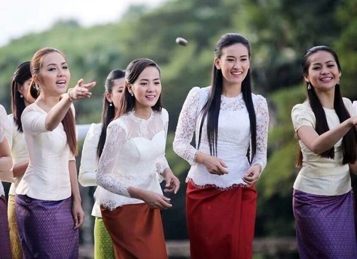

Traditional Customs

Bathing the Buddha
Devotees pour scented water over statues of Buddha to symbolize purification and renewal.

Honoring Ancestors
Families pay respects to their ancestors by offering food and prayers at home altars.

Traditional Games
Communities come together to play games like "Tug of War" and "Water Splashing."